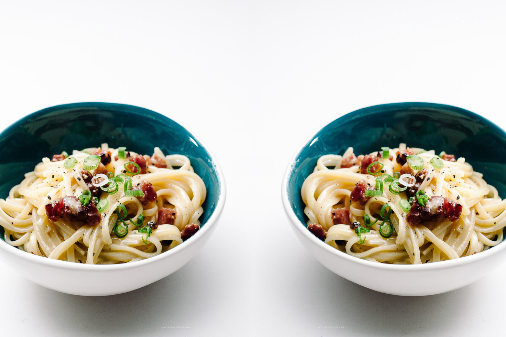
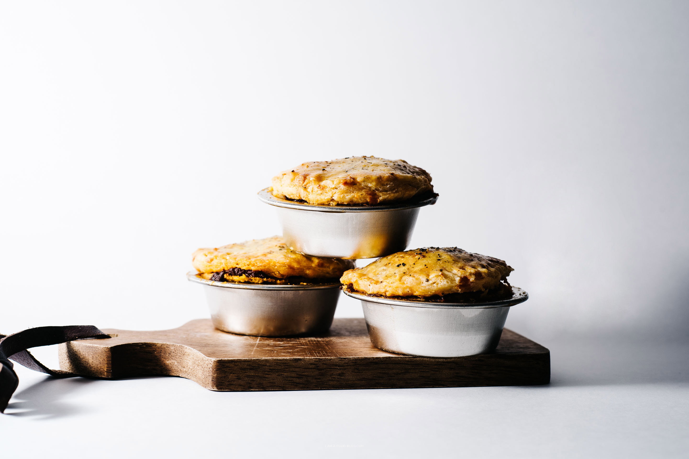

Fish Tacos
Vietnamese Fish Tacos w/ Quick Pickled Carrots and Daikon
FEED ME!
-

Vietnamese Fish Tacos w/ Quick-Pickled Carrots and Daikon
Sometimes it feels like everyday is Taco Tuesday around these parts. I’m not complaining though – I’ll never say no to a fluffy, soft tortilla filled with deliciousness. Especially when that deliciousness is a decidedly Vietnamese take on fish tacos!
-
One Pot Pasta: Tomato, Basil and Burrata Spaghetti
This is a quickie! Quick and easy recipes that I don’t have much to say about, aside from the fact that they taste awesome and you should give them a go! It’s the simple dishes, especially in hot weather.
-
Mini Ham and Cheese Croque Monsieur Puff Pastry Tarts
Croques are classic French bistro fare and since I figured and everyone should have tried them at least once in their life.
-
Perfect Microwave Nachos
I have an obsession with nachos. When they’re done right, I think they’re the perfect food: hot and crispy corn tortilla chips, melty cheese, and all the toppings. I like my nachos fully loaded, how about you?
-

Mini Blueberry Galettes
I don’t have a super-cute story about me picking blueberries in the summertime on the side of the road. I wish I did, but blueberries are awesome and you'll love them in this tastey desert!
-

Homemade Fudgesicle Brownie Pops
All it takes is a couple of bars from that familiar tune of the ice cream man: instantly I’m five again, equal parts nervous and excited!
-
Spicy Thai Oven-Fried Chicken Wings
I love a good chicken wing: pan-fried, deep-fried, baked, braised, boiled…well, you get the idea. Chicken wings are one of those universal foods: if you’re a fan of chicken, you’re pretty much a fan of chicken wings.
-
Turkey Banh Mi Burger
Sometimes people are weird about fusion food. I think it stems from a time when fusion meant foods that went together that just didn’t make sense. Now, I feel like all the best food is fusion, even if it isn’t.
-
Spicy Shrimp and Zucchini Noodles
I've been on a huge vegetable kick lately. I must be growing up or something because all of a sudden, I can’t get enough vegetables. When I was a kid I don’t remember eating vegetables at all ...
-

Potato Slider Buns
These potato buns were a dream to make. I love working with yeast, but for some reason I always shy away. Then when I do, I remember why I love it so much. The soft give of dough as you’re shaping it is a feeling like no other. There’s something incredibly satisfying about combining flour, salt, yeast, butter, and sugar (and potatoes!) and ending up with soft, fluffy buns.
-

Jalapeño Popper Deviled Eggs
If I see deviled eggs at a party, you betcha I’m going to be there, eating them all up before anyone else has a chance. Okay, kidding, I’d never eat ALL of them. I’d just have an egg or two(ish).
-
Ooo So Good Chocolate Chip Cookies
Golden brown and crispy on the edges and perfectly gooey and soft in the middles. The sprinkle of sea salt takes the entire cookie over the edge.
-

Coconut Macaroons with a Twist
A good coconut macaroon is a delicious thing: mounded, crisp and crunchy outsides and soft chewy insides. I’m a huge fan of macaroons, especially when they’re homemade. These have a slight twist by adding the slightly sweet green flavour of matcha. Of course, if you don’t have any matcha on hand you can feel free to make these without.
-

Chinese Sausage Carbonara Recipe
Here, the Chinese sausage basically stands in for the bacon. They have quite a few similarities: salty, porky, fatty. Salty crisp meat, creamy eggy sauce, and noodles –this is fall time comfort food at it’s best!
-
Pulled Pork Fried Rice Recipe
When I have a bunch of leftover meat I tend to make fried rice. I’ve made it with leftover fried chicken, porchetta and yes, even pulled pork. Pulled pork fried rice is definitely a bestovers kind of thing. You can clean out your fridge and make something delicious!
-
Lemongrass Pork Meatball Quinoa Bowl Recipe
Just mix all of the ingredients together gently, shape and bake! Popping them in the oven gives you some time to prepare all the vegetables and quinoa. They’re juicy and flavourful on their own, but throw them in a bún bowl and you’re gold!
-

Goat Cheese Toasts with Balsamic and Roasted Tomatoes
Even unadorned, Toast is delicious: the edges get crunchy and slightly caramelized, the golden brown outsides give way to soft and piping hot insides. When Toast is good, oh, it’s good. And as much as I like plain, I do play dress up every now and then. A bit of rich goat cheese, some roasted tomatoes, a drizzle of reduced balsamic and fresh basil is always a classic play.
-

Cheddar Cheese Broccoli Tots
They may not look like much, but they’re completely addictive! My broccoli and cheddar obsession lives on with these tots made for dipping. I spiced them up a bit with little shichimi togarashi dipped them in sriracha ketchup. Seriously good!
-

Mini Beef & Beer Hand Pies with a Cheddar Cheese Crust
These little beef pies will definitely warm you up from the inside out. Savoury, saucy minced beef insides studded with carrots, potatoes and peas and flavoured with beer and tomato all wrapped up in a flaky cheddar crust. They’re good either at room temperature or hot.
-
Gingerbread Cardamom Waffles
They’re soft, yet crisp and full of gingerbread flavour due to the classic molasses, cinnamon, ginger, nutmeg, cloves, and the not so traditional touch of cardamom for a bit more flair. I’m a huge gingerbread fan and if you whip up these waffles your house will be smelling all cozy in no time, no chilling, rolling or baking needed!